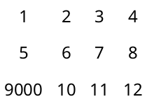
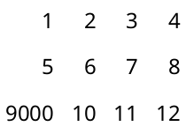

3 Pict Combiners
函数
d : real? = 0.0 pict : pict-convertible? (vc-append [d] pict ...) → pict? d : real? = 0.0 pict : pict-convertible? (vr-append [d] pict ...) → pict? d : real? = 0.0 pict : pict-convertible? (ht-append [d] pict ...) → pict? d : real? = 0.0 pict : pict-convertible? (htl-append [d] pict ...) → pict? d : real? = 0.0 pict : pict-convertible? (hc-append [d] pict ...) → pict? d : real? = 0.0 pict : pict-convertible? (hbl-append [d] pict ...) → pict? d : real? = 0.0 pict : pict-convertible? (hb-append [d] pict ...) → pict? d : real? = 0.0 pict : pict-convertible?
Different procedures align pictures in the orthogonal direction in different ways. For example, vl-append left-aligns all of the pictures.
The descent of the result corresponds to baseline that is lowest in the result among all of the picts’ descent-specified baselines; similarly, the ascent of the result corresponds to the highest ascent-specified baseline. If at least one pict is supplied, then the last element (as reported by pict-last) for the result is (or (pict-last pict) pict) for the using last supplied pict.
(define combiners (list vl-append vc-append vr-append ht-append htl-append hc-append hbl-append hb-append))
(define names (list "vl-append" "vc-append" "vr-append" "ht-append" "htl-append" "hc-append" "hbl-append" "hb-append"))
(define pict-a (colorize (filled-rectangle 60 30) "tomato"))
(define pict-b (colorize (disk 45) "cornflower blue"))
(define picts (for/list ([combiner combiners] [name names]) (list (text name null 15) (combiner pict-a pict-b)))) > (take picts 4) '(( ) ( ) ( ) ( ))
> (drop picts 4) '((
) ( ) (
) (
))
函数
(lt-superimpose pict ...) → pict?
pict : pict-convertible? (ltl-superimpose pict ...) → pict? pict : pict-convertible? (lc-superimpose pict ...) → pict? pict : pict-convertible? (lbl-superimpose pict ...) → pict? pict : pict-convertible? (lb-superimpose pict ...) → pict? pict : pict-convertible? (ct-superimpose pict ...) → pict? pict : pict-convertible? (ctl-superimpose pict ...) → pict? pict : pict-convertible? (cc-superimpose pict ...) → pict? pict : pict-convertible? (cbl-superimpose pict ...) → pict? pict : pict-convertible? (cb-superimpose pict ...) → pict? pict : pict-convertible? (rt-superimpose pict ...) → pict? pict : pict-convertible? (rtl-superimpose pict ...) → pict? pict : pict-convertible? (rc-superimpose pict ...) → pict? pict : pict-convertible? (rbl-superimpose pict ...) → pict? pict : pict-convertible? (rb-superimpose pict ...) → pict? pict : pict-convertible?
The descent of the result corresponds to baseline that is lowest in the result among all of the picts’ descent-specified baselines; similarly, the ascent of the result corresponds to the highest ascent-specified baseline. The last element (as reported by pict-last) for the result is the lowest, right-most among the last-element picts of the pict arguments, as determined by comparing the last-element bottom-right corners.
(define names (list "lt-superimpose" "ltl-superimpose" "lc-superimpose" "lbl-superimpose" "lb-superimpose" "ct-superimpose" "ctl-superimpose" "cc-superimpose" "cbl-superimpose" "cb-superimpose" "rt-superimpose" "rtl-superimpose" "rc-superimpose" "rbl-superimpose" "rb-superimpose"))
(define pict-a (colorize (filled-rectangle 60 30) "tomato"))
(define pict-b (colorize (disk 45) "cornflower blue"))
(define picts (for/list ([combiner combiners] [name names]) (list (text name null 15) (combiner pict-a pict-b)))) > (take picts 3) '(( ) (
) ( ))
> (take (drop picts 3) 3) '((

) (
) ( ))
> (take (drop picts 6) 3) '((
) ( ) (
))
> (take (drop picts 9) 3) '(( ) ( ) (
))
> (take (drop picts 12) 3) '(( ) (
) ( ))
函数
base : pict-convertible? dx : real? dy : real? pict : pict-convertible? (pin-over base find-pict find pict) → pict? base : pict-convertible? find-pict : pict-path? find : (pict-convertible? pict-path? . -> . (values real? real?)) pict : pict-convertible?
> (pin-over (colorize (filled-rectangle 70 40) "chocolate") 10 10 (colorize (filled-rectangle 30 30) "orange")) > (define top (colorize (filled-rectangle 70 40) "royalblue"))
> (pin-over (vc-append top (colorize (filled-rectangle 70 40) "firebrick")) top cb-find (colorize (disk 20) "white"))

函数
base : pict-convertible? dx : real? dy : real? pict : pict-convertible? (pin-under base find-pict find pict) → pict? base : pict-convertible? find-pict : pict-convertible? find : (pict-convertible? pict-path? . -> . (values real? real?)) pict : pict-convertible?
> (define txt (colorize (text "P I C T S" null 25) "chocolate"))
> (define rect (colorize (filled-rectangle (pict-width txt) (* 0.3 (pict-height txt))) "lemonchiffon"))
> (pin-under txt 0 (- (/ (pict-height txt) 2) (/ (pict-height rect) 2)) rect)
函数
(table ncols picts col-aligns row-aligns col-seps row-seps) → pict? ncols : exact-positive-integer? picts : (non-empty-listof pict-convertible?)
col-aligns :
(or/c (list*of (->* () #:rest (listof pict-convertible?) pict-convertible?)) (listof (->* () #:rest (listof pict-convertible?) pict-convertible?)))
row-aligns :
(or/c (list*of (->* () #:rest (listof pict-convertible?) pict-convertible?)) (listof (->* () #:rest (listof pict-convertible?) pict-convertible?))) col-seps : (or/c (list*of real?) (listof real?)) row-seps : (or/c (list*of real?) (listof real?))
The col-aligns, row-aligns, col-seps, and row-seps arguments are “lists” specifying the row and columns alignments separation between rows and columns. For c columns and r rows, the first two should have c and r superimpose procedures, and the last two should have c-1 and r-1 numbers, respectively. The lists can be “improper” (i.e., ending in a number instead of an empty list), in which case the non-pair cdr is used as the value for all remaining list items that were expected. The col-aligns and row-aligns procedures are used to superimpose all of the cells in a column or row; this superimposition determines the total width or height of the column or row, and also determines the horizontal or vertical placement of each cell in the column or row.
> (table 4 (map (λ (x) (text (format "~a" x))) (list 1 2 3 4 5 6 7 8 9000 10 11 12)) cc-superimpose cc-superimpose 10 10) 
> (table 4 (map (λ (x) (text (format "~a" x))) (list 1 2 3 4 5 6 7 8 9000 10 11 12)) rc-superimpose cc-superimpose 10 10) 